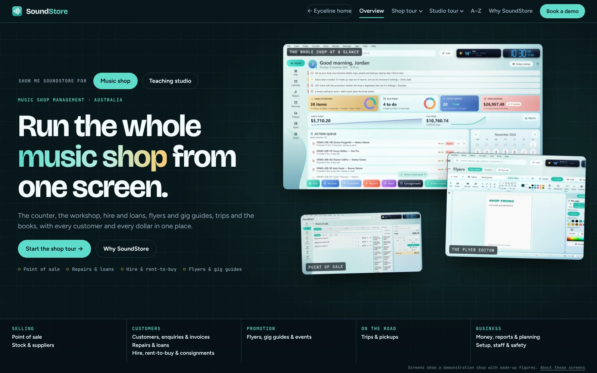
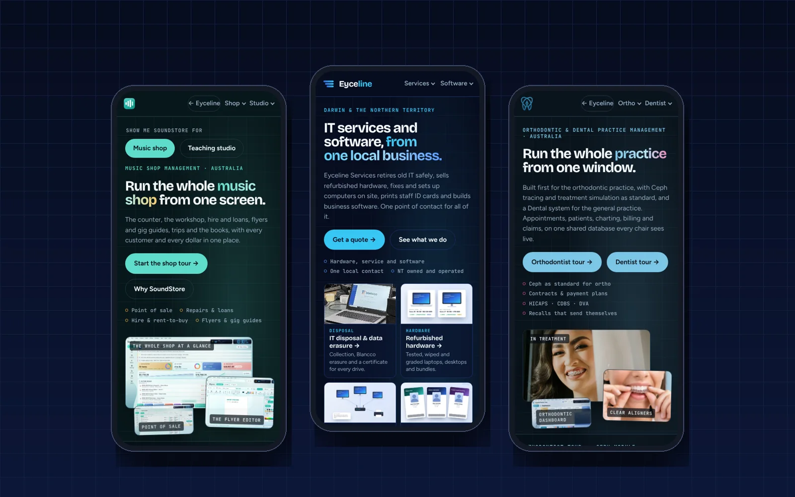
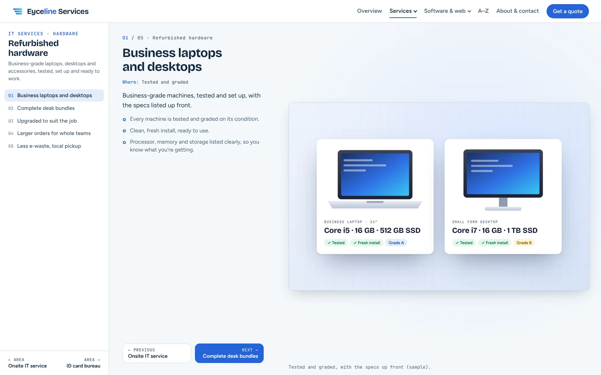

01 / 04 · Website design
A website like this one
Website design
This site, and the SoundStore and DentaCore sites, were designed and built by Eyceline Services. We can build yours the same way, and quickly.
- A page for each thing you do, with a clear next step on every page.
- Your own words and your own pictures, or graphics made to fit.
- Your own domain name, like eyceline.com.

02 / 04 · Website design
Product sites with a full tour
Examples
The SoundStore and DentaCore sites walk visitors through every feature, one screen at a time, with real screenshots.
- Menus, a search-everything page and a book-a-demo page.
- Next and Previous buttons, and the arrow keys, step through the tour.

03 / 04 · Website design
Works on every screen
Phones, tablets and computers
Every page is checked on a laptop and on a phone before it goes live.
- Menus fold away neatly on a phone.
- Pictures resize to fit, so pages stay quick to load.

04 / 04 · Website design
Quick to build, easy to change
How it works
Tell us what you need and see a first version quickly. Changes like a new service, new pictures or new wording can go live the same day.
- Hosted on GitHub Pages, so there's no server to look after.
- Ask for a quote for a new site, or a refresh of the one you have.
